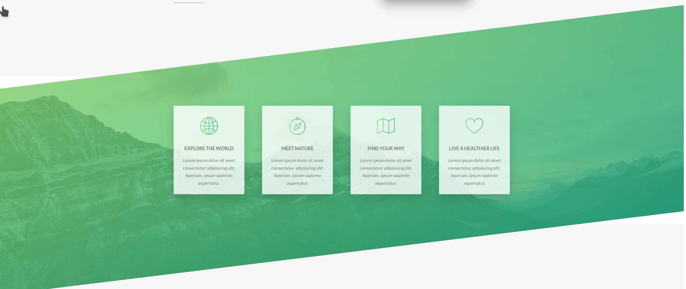
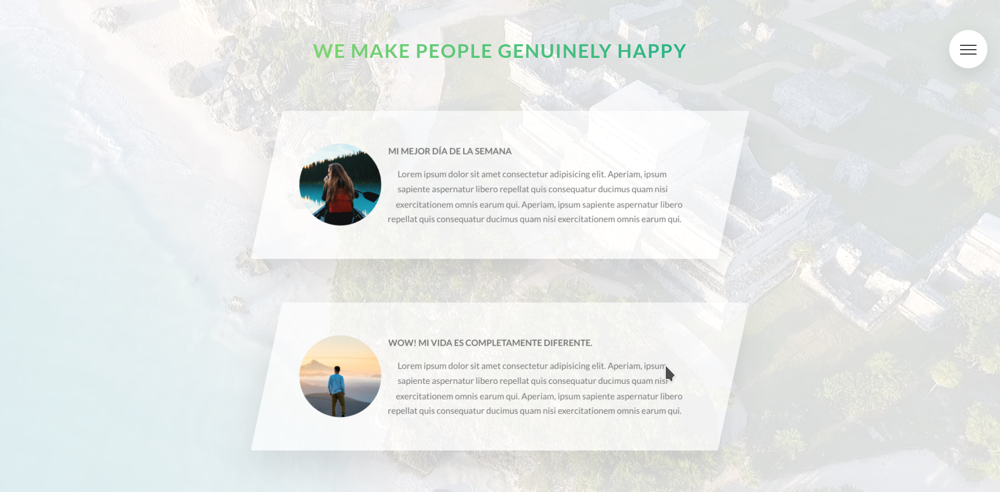

Conversion a sass.
Primeros pasos.
Siguiendo con el proyecto de la Activad 1.
- El primer paso que vamos ha realizar es encontrar o descubrir más elementos que podemos convertir a variables.
- Ahora vamos a comprobar como nos ayuda la nomenclatura BEM cuando anidemos.
- En este punto, deberemos aplicar la estructura de directorios y ficheros en nuestro proyecto. Vuestro trabajo es incorporar el código que vosotros consideréis en cada uno de los ficheros. Puede haber más de una interpretación.
A continuación deberéis importar todos estos ficheros a
main.scss. Tener cuidado en el orden de importación de los ficheros en elmain.scss. Vamos a crear los siguientes directorios y ficheros dentro de estos. Estos son los básicos que tenemos que crear en todo proyecto que vayamos a realizar pequeño o grande. Aunque no se utilice alguno de los directorios.
//BASE:
_animations.scss
_base.scss
_typography.scss
_utilities.scss
//ABSTRACT:
_variables.scss
_mixins.scss
_funtions.scss
//COMPONENTS:
//LAYOUT:
//PAGES:
_home.scss
Creación de una cuadrícula mediante SASS.
Siguiendo con el anterior proyecto vamos a crear nuestro sistema grid. Que lo vais a utilizar todas las siguientes secciones.
código html de comprobación
- Crea una
seccióncon la clase .grid-test. Dentro de esta vamos a crear nuestro primeras columnas y filas. - Para empezar, vamos a crear dos columnas que abarquen todo el espacio. Para ello crearemos una div con la clase row y dentro de esta otro div con la clase
col-1-2. - En la siguiente fila vamos a crear
col-1-3. Por lo que crearemos la misma estructura de antes pero con tres elementos y con la clasecol-1-3. - En la siguiente fila vamos a crear
col-1-3ycol-2-3. Esta última se extiende en dos columnas. - En la siguiente fila vamos a crear
col-1-4para todas. Es decir tenemos cuatro columnas. - En la siguiente fila vamos a crear
col-1-4todas menos la última que se extiende dos columnascol-2-4. Es decir tenemos tres columnas. - En la siguiente fila vamos a crear
col-1-4en todas menos la última que se extiende en tres columnascol-3-4. Es decir tenemos dos columnas.
Código CSS
- Ahora, crearemos un fichero llamado
_grid.cssen el directorio correspondiente. Vamos a crear los estilos para las filas y las columnas. - A la fila le vamos a dar un ancho máximo de 1140px (crea una variable que la podamos reutilizar). Calculado en
rem. Tenemos que tener en cuenta que en html hemos puesto % al font-size. La centramos y le damos el color#eee. Además le damos un margen de separación entre las filas de 80px, ponlo enremsy crea una variable para tal fin. También vamos a crear una variable de separación horizontal de 60px (ponlo enrems). - El problema que nos encontramos en el anterior ejercicio es que la última fila no tiene que tener margen. Arreglalo.
- Ahora vamos a crear las clases
col-1-2dentro de row. Teniendo en cuenta que hay que calcular suwidthy establecer el tamaño de separación de las columnas (calles). En esta clase solo tenemos dos columnas. Para calcular elwitdhde cada una de las columnas utilizaremoscalc(). Busca información sobre esta función. (Utiliza la variable de separación horizontal que hemos utilizado anteriormente). - Ten en cuenta que hay estilos comunes para todos las columnas que empiecen por
col-. - Los otros tamaños para las otras clases se se tienes que calcular según los elementos que tengamos y el margen entre las columnas.
Creación de la sección Feature mediante SASS.
- Ahora vamos a empezar con la siguiente sección de nuestra web. Para lo cual primero, vamos a ver como funciona la fuente de iconos Awesome. Que es la misma que utiliza Bootstrap. Vamos a utilizar la versión 5 de esta fuentes que la podemos descargar aquí.
- Para utilizar este tipo de fuentes podemos optar por dos caminos. El primero de todos y más compatible con los navegadores es que una vez que lo descarguemos copiemos la carpeta webFonts y fontawesome-all.css a la carpeta styles. A continuación referenciemos con
<link href="/styles/fontawesome-all.css" rel="stylesheet"> - ¿Cómo se utiliza?.
<i class="fas fa-chess-king"></i>. Esto incluirá un icono de una pieza de ajedrez. - El segundo camino es utilizar
fontawesome-all.jsy guardarlo en nuestro proyecto. Como está en beta, no tenemos link en npm pero si para frameworks como angular etc.... . Crearíamos un nuevo directorio llamado src/js y lo copiaríamos allí. Y después procederíamos igual que antes, introduciendo el html anterior. La ventaja si observáis es que nos da más estilos y potencia de uso. Las clases de los iconos y tipos los podéis visitar aquí. - Para esta nueva sección crearemos una clase llamada sea
feature-feactures. Tiene que tener un background con una foto y un gradiente lineal como en el header. Además utiliza clip-path para dejarlo como un trapecio. - El objetivo es, crear cuatro cajas (Utiliza el grid y crea la clase feature-box) con un icono en la parte de arriba y a continuación una cabecera (
.heading-tertiary) , después dos párrafo que lo explique - A los iconos les tienes que dar algunos estilos (
feature-box__icon). - A cada una de las cajas(
feature-box). Cuando hagamos hover tiene que subir y aumentarlos de tamaño. - Todavía no hemos terminado con la sección feature. Vamos a darle un aspecto parecido a el header pero esta vez no vamos a utilizar clip-path. Vamos a transformar la sección con skew unos grados en negativo. A continuación, notarás que las cajas con las explicaciones también se han deformado. Deberás arreglarlo también con skew con valor positivo. Ahora también notarás que arriba hay un espacio en blanco con la otra sección, ajustalo con
margin-toppero con valor negativo. 
Creación de la sección stories mediante SASS.
En esta sección,solo os voy a dejar las imágenes y algunas propiedades que necesitaréis para realizar el css. Esta propiedad realiza el efecto de hacer la forma del circulo.
shape-outside: circle(50% at 50% 50%);
-webkit-clip-path: circle(50% at 50% 50%);
clip-path: circle(50% at 50% 50%);
Primera imagen sin hacer hover en las imágenes.
También tenemos que considerar que el fondo no es una imagen si no que es un video. Buscar un video y ponerlo que cubra toda la a la section. Utilizando el código html5 con el cual podemos poner varias fuentes, con distinto formato, formato mp4 y webm

Segunda imagen haciendo hover en las imágenes.

Warning
Tener en cuenta que vosotros tenéis que decir que clases , ficheros vais a crear y en que directorio. Ya que la estructura de directorios es la que os pongo en el primer ejercicio.